Introduction
Overview
Polly is capable of hosting any desktop applications that can be dockerized. One such desktop application is El-MAVEN.
It is an open-source LC-MS data processing engine that is optimal for isotopomer labeling and untargeted metabolomic profiling experiments. Currently El-MAVEN exists as a desktop application that runs on Windows, Linux, and Mac systems. The software can be used to view the mass spectra, align chromatograms, perform peak-feature detection, and alignment for labeled and unlabeled mass spectrometry data. The aim of this software package is to reduce the complexity of metabolomics analysis by using a highly intuitive interface for exploring and validating metabolomics data.
El-MAVEN is now hosted on the Polly platform. This means El-MAVEN and all your Polly applications can reside on a single platform and can be shared with your colleagues easily. The following are the advantages of having El-MAVEN on Polly:
-
The application scales automatically on the Polly infrastructure for multiple users to use simultaneously.
-
Access to the application is controlled by Polly authentication. Only users in your organization with required Polly authorization can access the application.
-
Have input and output data along with analysis stored at the same location in the Polly Workspaces.
-
Share the analyses along with input and output data by simply sharing the workspace.
Getting Started
Select El-MAVEN from Polly Dashboard under the Metabolomics Data Tab as shown in Figure 1. Create a New Workspace or choose form the existing one from the drop down and provide the Name of the Session to be redirected to choose the machine configuration.
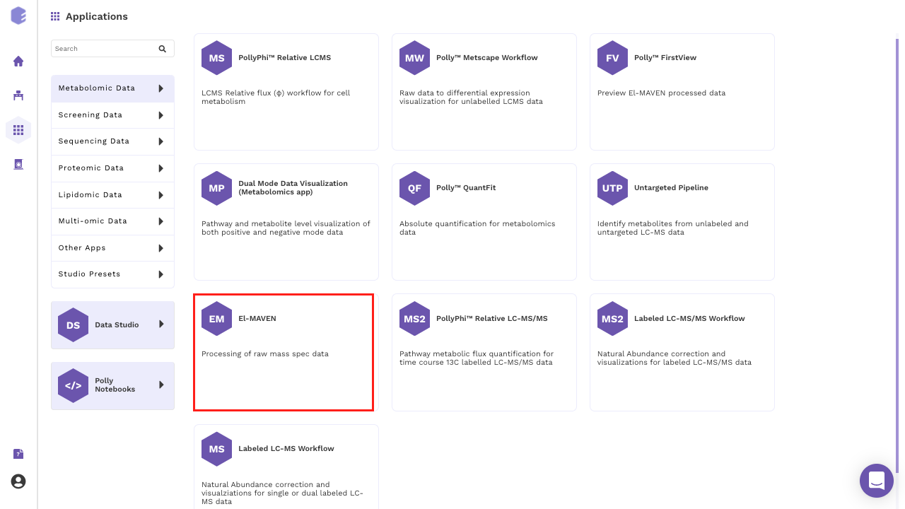
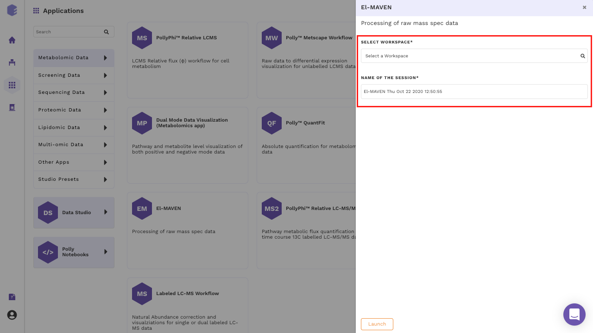
The size of the data varies from a few MBs to hundreds of GBs, and in order to process and analyze this huge data, you would need the computation power from a small machine to a large workstation. Polly supports configurations having 16 to 120 GB Ram and 4 to 16 CPU cores as of now. While other machine configurations can be added on customer request.

- General purpose: Configuration 4 CPU cores 16 GB RAM fall under this category.
| Name | CPU/Cores | RAM |
|---|---|---|
| Polly x-large | 4 | 16 GB |
- Memory optimized: Configurations from 4 to 16 CPU cores and 32 to 120 GB RAM fall under this category. The various configurations are:
| Name | CPU/Cores | RAM |
|---|---|---|
| Polly 2x-large | 4 | 32GB |
| Polly 3x-large | 8 | 64GB |
| Polly 4x-large | 16 | 120GB |
Choose from these pre-configured machines. Upon selecting you will see a progress bar that will tell you the status of your app launch.
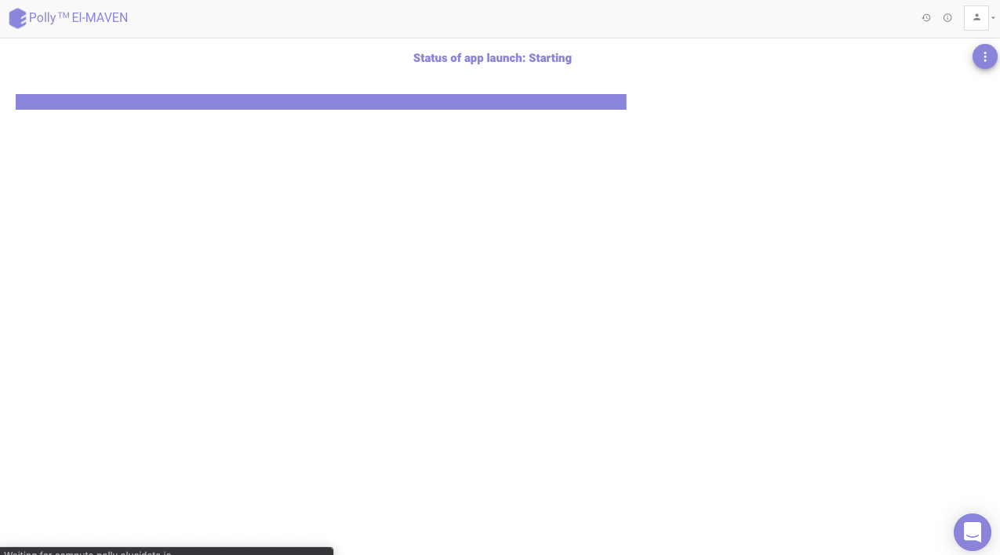
This application act as a one-stop interface for all your peak curation needs. It contains:
-
El-MAVEN desktop application: For peak picking
-
MSConvert: For raw file conversions
-
Browser: To access data from anywhere on the cloud
-
Terminal: For transferring your raw and processed data to and from the workspace. Also it can be used as a general terminal for other operations as well.
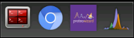
El-MAVEN
Once the server is ready, you will see El-MAVEN opened on the browser. The interface is similar to the desktop version. You can start analyzing by adding your files.
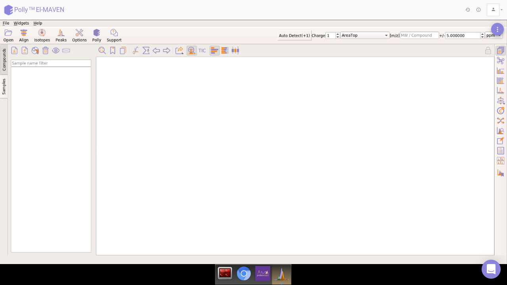
MSConvert
To cater to the needs of your file conversions. Polly also hosts MSConvert application.
It is a command-line/GUI tool that is used to convert between various mass spectroscopy data formats. Raw data files obtained from mass spectrometers need to be converted to certain acceptable formats before processing in El-MAVEN. MSConvert supports the following formats:
-
.mzXML
-
.mzML
-
.RAW (Thermofisher)
-
.RAW (Waters)
-
.d (Agilent)
-
.wiff (ABSciex)
Select the tab next to El-MAVEN to access it as and when required.
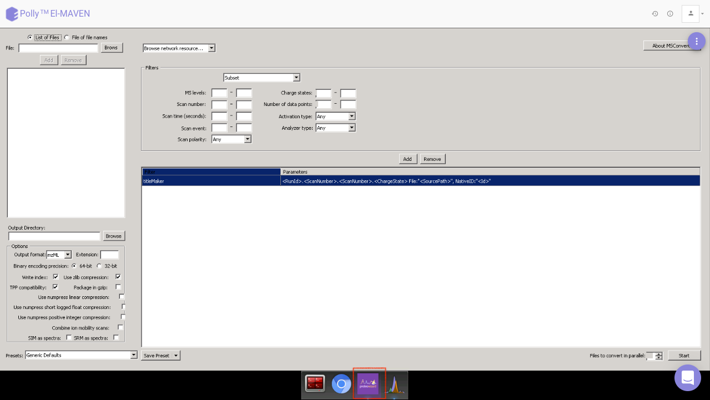
Browser
Polly also provides a web browser for you to surf the internet on the fly. You can now search for any data related query or get data from anywhere on the cloud (Polly workspaces, FTP, etc) within the same interface.
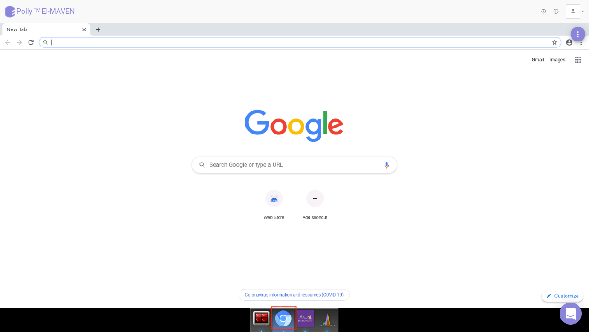
Terminal
Once the Terminal option is selected, it provides access to the command-line interface to execute any sets of commands. You have access to all the file types which are available in Polly through the terminal. You can use it for getting data into the El-MAVEN instance from the Workspaces and sending processed data back. The terminal option also allows you to install Python or R packages, managing system binaries and system configurations and helps you working with code repositories hosted on GitHub, Bitbucket, etc.
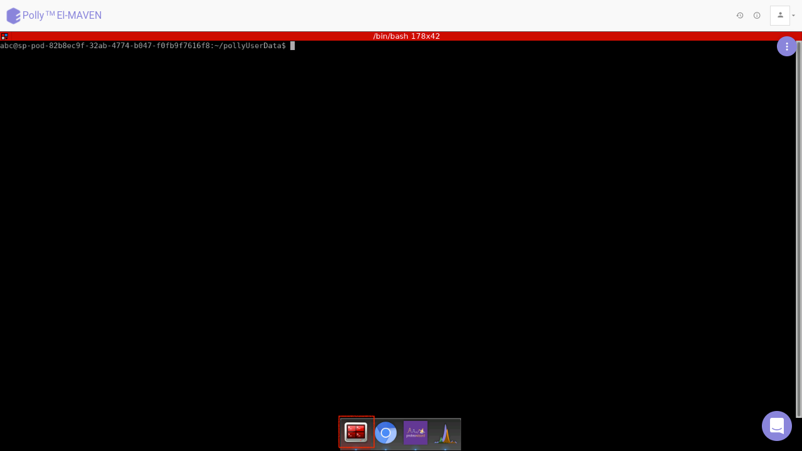
Accessing directories
You can fetch directories from the Workspaces. The contents of any directory within a Workspace can be listed using the following command on the terminal.
polly files list --workspace-path "path/to/polly/folder" -yHere the path of the directory has to start with “polly://”.
To view the contents within a folder called “Data” in the workspace, the following command will have to be executed on the terminal.
polly files list --workspace-path "polly://Data" -yTo access the directory, the following command will have to be executed on the terminal.
polly files sync -s "path/to/polly/folder" -d "path/on/elmaven/instance" -yIf the folder called “Data” is to be accessed from Workspace in the folder called “Input”, execute the following command.
polly files sync -s "polly://Data" -d "Input" -yTo save directories back to the Workspace, keep the source as it is and destination as Polly Workspace in the same command as mentioned above.
polly files sync -s "path/on/elmaven/instance" -d "path/to/polly/folder" -yTo save the folder called “Output” back to Polly Workspace, use the following command.
polly files sync -s "Output" -d "polly://" -yInstance Termination
Since peak picking can take days, Polly provides three options:
-
You can choose to close the tab without stoping or terminating it. This would keep the instance running in the background even if the browser tab is closed. You can later restore the same analysis with the same data used, from the Analysis section.
-
In case you choose to close the instance, you have separate options to Stop and Terminate the instance. Stopping the instance would keep the data (picked peaks) intact in the machine and the instance can be later resumed (soon to be available on Polly). If the tab is closed without Terminating or Stopping the instance, it would continue to run in the background.
-
In case of termination of instance, the data would not remain intact in the machine. You would have to add the files again from the Workspace to perform the analysis.
Note:
- Make sure you transfer your results to the workspace before selecting the terminate option.
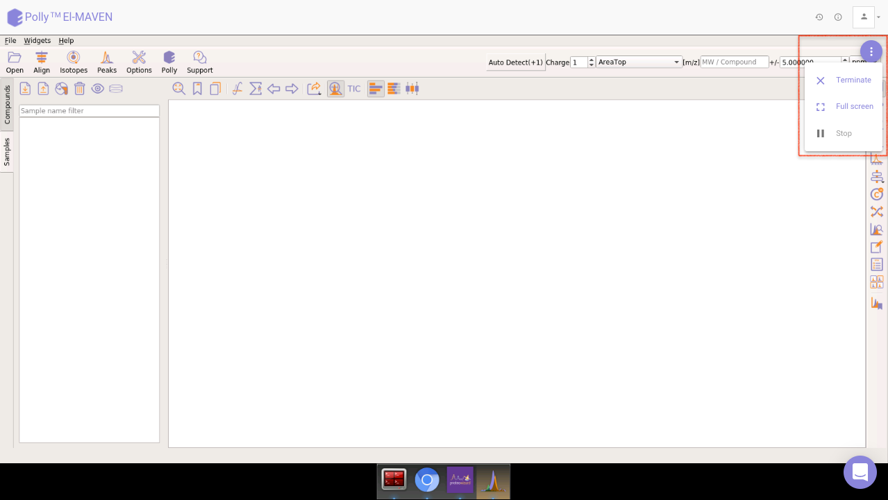
Restore Analysis
Polly contains the restore functionality that allows any analysis to be restored to the last step. This functionality would be available only if the instance has not been terminated.
Analyses can be restored by navigating to the Analysis section of a workspace. Click on History for the specific analysis to restore.
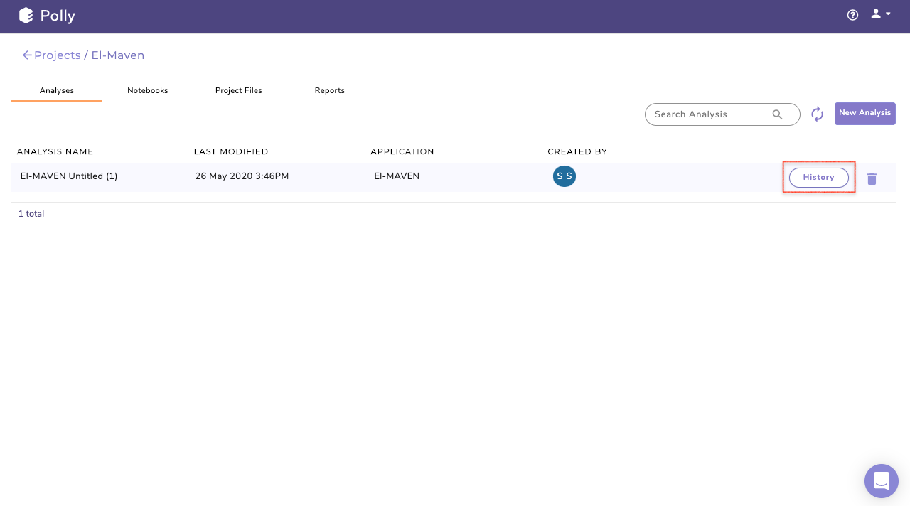
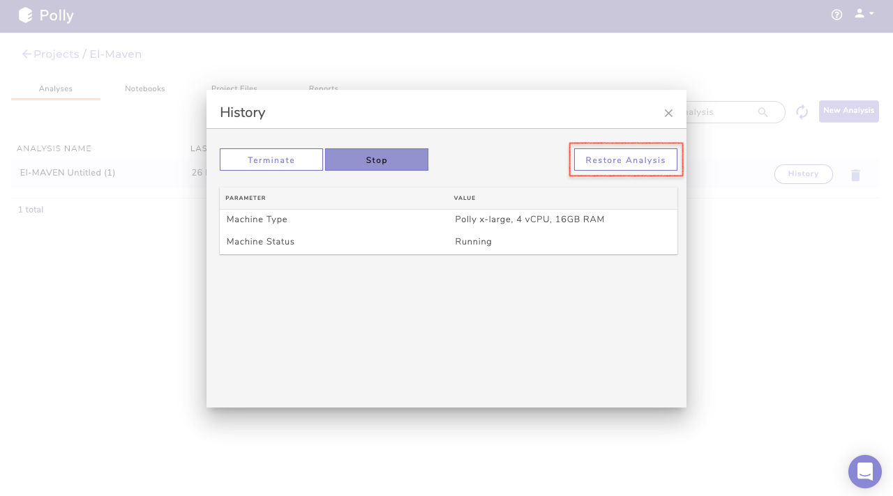
Clicking on Restore Analysis will take you back to the application with the same data used before. It helps you to restore the incomplete analysis and improves reproducibility.
In case you have terminated the instance, the option to restore will not be available. Instead, there will be an option to Restart Analysis, which will take you back to the analysis with the same machine as used earlier in the analysis without restoring the data back. You would have to add the files again from the workspace to perform the analysis.
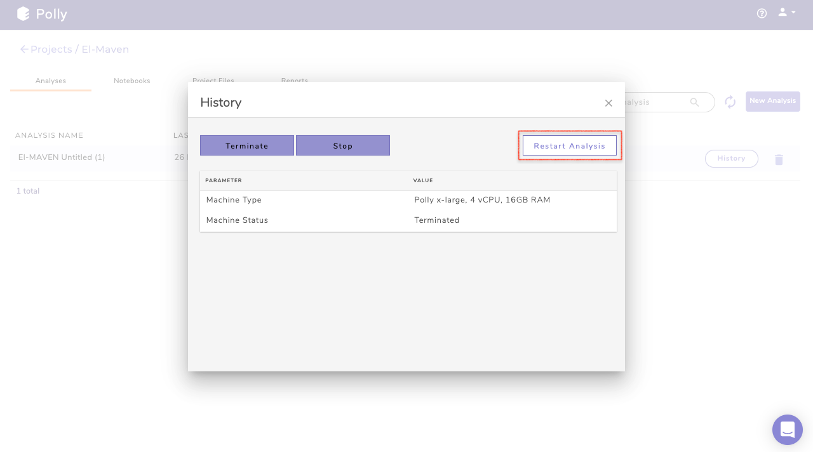